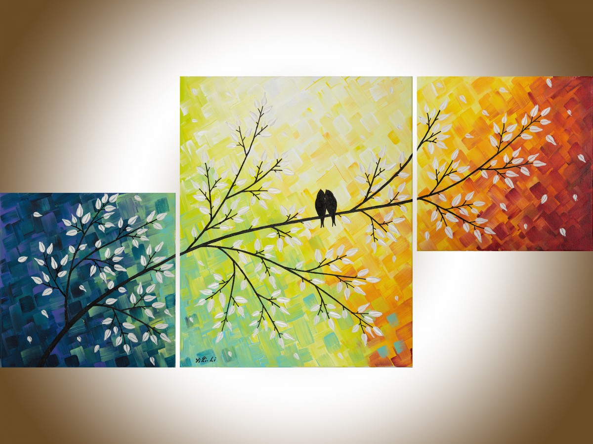

Link to the website. For the best experience, please open it with computer.
YOU is a web art project collabrated with Zijin Gao. As the title entails, this project is highly user-oriented. By letting the tree grows, the users can enters into different pages where they can make choice, including favorite color, shape, flavor and so on. The process of making choice is helping the users find their parts of identity. And at the end, a special animation will be generated by the user's choice.
By pressing Right Arrow on keyboard, users can make the tree growing gradually. At each branches, users can click on leaves which will lead the user to different pages. The first page will let the user pick his/her favorite time in one day--by dragging the pointer to the desire time. The next choice would be user clicking on his/her favorite shape. Similarly, the user can choose his/her own favorite flavor color and flavor. The last choice would be the user types in certain sentences to respond the prompt. After all this, the user can click on the last branch which will generate an animation page specially based on all the choices the user made.
Our inspiration is mainly from the painting below:
Inspired by the branches concept, we decided to draw a tree using p5.js and using branches to lead to different choice which enables the users to explore themselves.